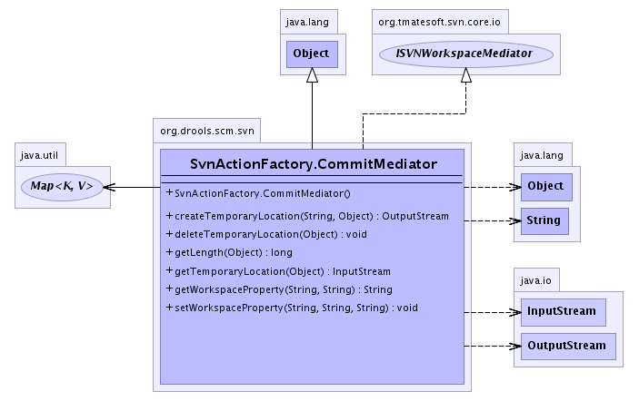

org.drools.scm.svn
Class SvnActionFactory.CommitMediator
java.lang.Object
 org.drools.scm.svn.SvnActionFactory.CommitMediator
org.drools.scm.svn.SvnActionFactory.CommitMediator
- All Implemented Interfaces:
- org.tmatesoft.svn.core.io.ISVNWorkspaceMediator
- Enclosing class:
- SvnActionFactory
public static class SvnActionFactory.CommitMediator
- extends java.lang.Object
- implements org.tmatesoft.svn.core.io.ISVNWorkspaceMediator
-
- 
| Methods inherited from class java.lang.Object |
clone, equals, finalize, getClass, hashCode, notify, notifyAll, toString, wait, wait, wait |
SvnActionFactory.CommitMediator
public SvnActionFactory.CommitMediator()
getWorkspaceProperty
public java.lang.String getWorkspaceProperty(java.lang.String path,
java.lang.String name)
throws org.tmatesoft.svn.core.SVNException
- Specified by:
getWorkspaceProperty in interface org.tmatesoft.svn.core.io.ISVNWorkspaceMediator
- Throws:
org.tmatesoft.svn.core.SVNException
setWorkspaceProperty
public void setWorkspaceProperty(java.lang.String path,
java.lang.String name,
java.lang.String value)
throws org.tmatesoft.svn.core.SVNException
- Specified by:
setWorkspaceProperty in interface org.tmatesoft.svn.core.io.ISVNWorkspaceMediator
- Throws:
org.tmatesoft.svn.core.SVNException
createTemporaryLocation
public java.io.OutputStream createTemporaryLocation(java.lang.String path,
java.lang.Object id)
throws java.io.IOException
- Throws:
java.io.IOException
getTemporaryLocation
public java.io.InputStream getTemporaryLocation(java.lang.Object id)
throws java.io.IOException
- Throws:
java.io.IOException
getLength
public long getLength(java.lang.Object id)
throws java.io.IOException
- Throws:
java.io.IOException
deleteTemporaryLocation
public void deleteTemporaryLocation(java.lang.Object id)